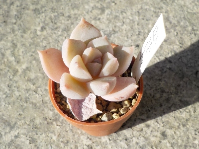
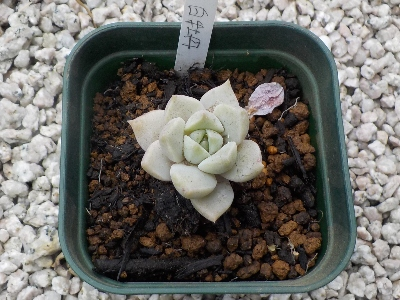

お店で白牡丹が一番きれいだと思ったので購入しました。
更新日 : 2026/01/31

多肉植物屋さんでじっくり色々見たんですが、葉っぱの形、厚み、色合いを考えたらこれが一番好きだなと思ったので購入しました。
程よくプックリしていて白いのがいいです。同じ品種の大きい株も葉の形とバランスがいいなと思いました。
お買い求め易い小さいものを買ったので、今後は大きく育てたいです。
更新日 : 2026/01/31

多肉植物屋さんでじっくり色々見たんですが、葉っぱの形、厚み、色合いを考えたらこれが一番好きだなと思ったので購入しました。
程よくプックリしていて白いのがいいです。同じ品種の大きい株も葉の形とバランスがいいなと思いました。
お買い求め易い小さいものを買ったので、今後は大きく育てたいです。
更新日 : 2026/04/22

写真で見るまで気づきませんでしたが、色が緑に変わってますね。これはこれでいいんですが、ちょっと普通の多肉植物っぽくなりましたね。
土を増やして水分をたっぷりにしました。水分多すぎてちょっと不安な気分です。ちゃんと育つかな？
自分がいいと思ったものを育てるのが一番です。